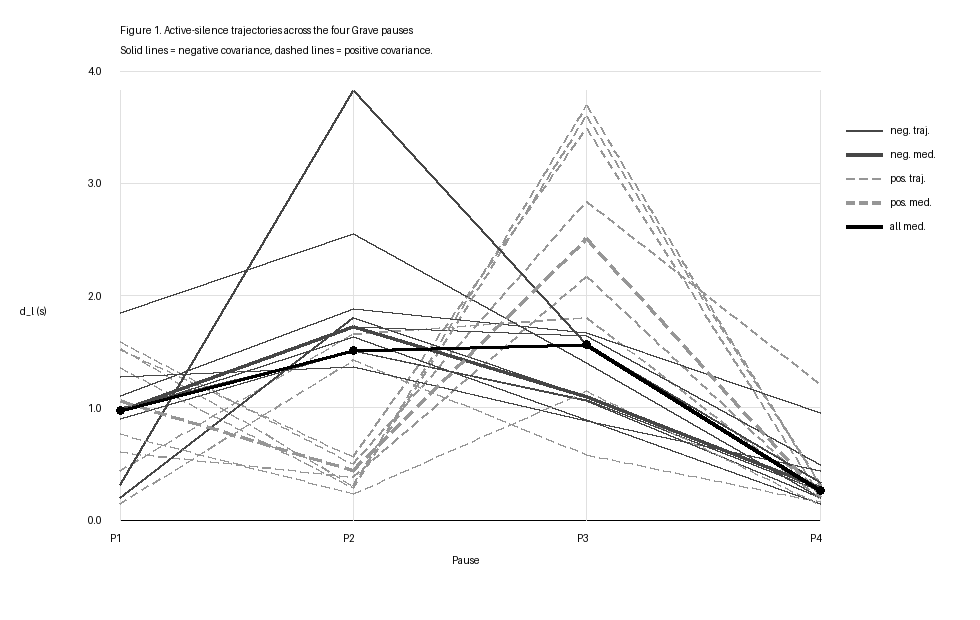

Waveform Check Panel
Choose a recording and pause to load the matching waveform panel when it is available.
An inspection interface for four notated pauses in the Grave of Beethoven's Piano Sonata No. 8 in C minor, Op. 13 (Pathétique), measured across 16 professional recordings with an energy-threshold detector. The study found no reliable difference between the second and third pauses; detector error from file level alone exceeds the effect being measured. Companion demo to an extended abstract submitted to the ISMIR 2026 Late-Breaking Demo session (non-archival). Source code and data tables.
A five-minute walkthrough: the boundary model, the corpus result, the threshold sensitivity check, and the audio-MIDI release comparison.
This viewer reads the derived event table, detector-boundary metadata, threshold summary, and an author-owned demo recording. The professional source recordings are copyrighted, so the site distributes descriptors and boundary metadata only for those recordings; playback is enabled only for the author-owned Grave take or when a local audio_paths.json file is configured. Source code and data tables are available in the GitHub repository.
The author-owned demo recording can play in the browser. Professional recordings remain external; local playback appears for them only when audio_paths.json points to local audio. The URL fragment is set to the selected event span when boundary metadata is available.
For the author-owned recording only, this compares the final MIDI note-off in the selected event window with the audio threshold crossing.
Waiting for selection...
The blue span is detected sounding time; the red span is low-energy duration. This is metadata-driven and does not redistribute audio.
Choose a recording and pause to load the matching waveform panel when it is available.
The full-corpus trajectory view is generated from the same source-condition event table.

Waiting for selection...